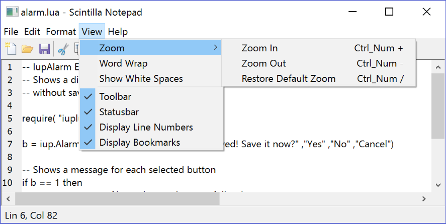
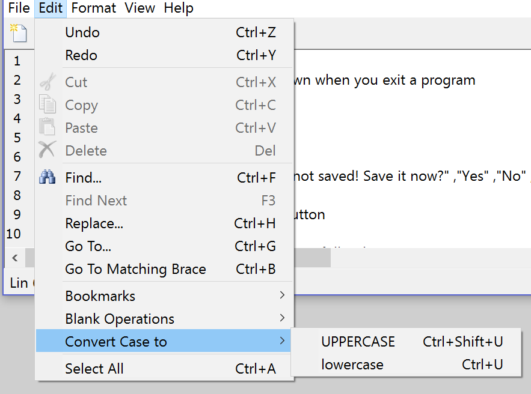
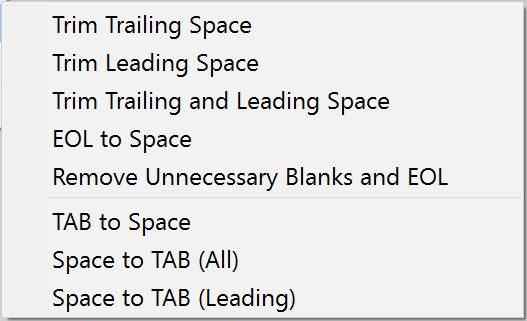

Creates a notepad dialog using the IupScintilla control. It is a predefined dialog for a text notepad. The dialog can be shown with IupShow, IupShowXY or IupPopup.
Ihandle* IupScintillaDlg(void); [in C]
iup.scintilladlg{} -> (elem: ihandle) [in Lua]
scintilladlg() [in LED]
Returns: the identifier of the created element, or NULL if an error occurs.
Supports all the IupDialog attributes. But some attributes where changed to configure the dialog and the dialog has innumerous children to compose the notepad.
New attributes. All non inheritable.
SUBTITLE: partial title to be used in dialog title along with the current file name title.
UPDATETITLE (write-only): force an update of the dialog title. (since 3.23)
CONFIG: name of a IupConfig resource to be used for persistency of menu options and recent file list. Must be set before map. This will trigger the CONFIGLOAD_CB callback (since 3.23).
CONFIG_HANDLE: Ihandle of the IupConfig resource.
NEWFILE (write-only): clear the text contents and initialize a new file.
OPENFILE (write-only): opens a file using the value as filename. If value is NULL works as NEWFILE.
SAVEFILE (write-only): saves a file using the value as filename. If value is NULL uses the current file name.
CLOSEFILE (write-only): closes a file checking if it is saved. (since 3.23)
FORCECLOSEFILE (write-only): force a file to close with no save check. (since 3.23)
EXTRAFILTERS: additional filters for File Open and File Save As dialogs in the same format as the IupFileDlg EXTFILTER attribute. The filters will be concatenated at start with the existing filters: "Text Files|*.txt|All Files|*.*|".
TOGGLEMARKERid (write-only): toggles the state of a marker given its line number as id, and margin as value.
Supports all the IupDialog callbacks.
New callbacks.
EXIT_CB: Action generated when the dialog is closing. Called at the last moment after the dialog is already hidden.
int function(Ihandle* ih); [in C]
elem:exit_cb() -> (ret: number) [in Lua]
ih: identifier of the element that activated the event.
NEWTEXT_CB: Called when a new document is created. (since 3.23)
int function(Ihandle* ih, char* old_filename, char* new_filename); [in C]
elem:newtext_cb(old_filename, new_filename: string) -> (ret: number) [in Lua]
ih:
identifier of the element that activated the
event.
old_filename: previous file name.
new_filename: current filename.
CLOSETEXT_CB: Called when a document is closed. (since 3.23)
int function(Ihandle* ih, Ihandle* multitext); [in C]
elem:closetext_cb(multitext: ihandle) -> (ret: number) [in Lua]
ih:
identifier of the element that activated the
event.
multitext: identifier of the scintilla element that
is affected.
NEWFILENAME_CB: Called after the filename of document was changed by "Save As" or "Rename". (since 3.23)
int function(Ihandle* ih, Ihandle* multitext); [in C]
elem:newfilename_cb(multitext: ihandle) -> (ret: number) [in Lua]
ih:
identifier of the element that activated the
event.
multitext: identifier of the scintilla element that
is affected.
MARKERCHANGED_CB: Action generated when a marker is changed in a margin (interactively or programmatically).
int function(Ihandle* ih, Ihandle* multitext, int lin, int margin); [in C]
elem:markerchanged_cb(multitext: ihandle, lin, margin: number) -> (ret: number) [in Lua]
ih:
identifier of the element that activated the
event.
multitext: identifier of the scintilla element that
is affected.
lin: line number where the marker was changed
(starts at 0).
margin: which margin was affected.
RESTOREMARKERS_CB: Called when the markers in the Scitilla editor are being restored from the configuration file. By default only bookmarks are handled.
int function(Ihandle* ih, Ihandle* multitext); [in C]
elem:restoremarkers_cb(multitext: ihandle) -> (ret: number) [in Lua]
ih:
identifier of the element that activated the
event.
multitext: identifier of the scintilla element that
is affected.
SAVEMARKERS_CB: Called when the markers in the Scitilla editor are about to be saved in the configuration file. By default only bookmarks are handled.
int function(Ihandle* ih, Ihandle* multitext); [in C]
elem:savemarkers_cb(multitext: ihandle) -> (ret: number) [in Lua]
ih:
identifier of the element that activated the
event.
multitext: identifier of the scintilla element that
is affected.
CONFIGLOAD_CB: Called when the configuration file was set, and supposedly loaded. (since 3.23)
int function(Ihandle* ih, Ihandle* multitext); [in C]
elem:configload_cb(multitext: ihandle) -> (ret: number) [in Lua]
ih:
identifier of the element that activated the
event.
multitext: identifier of the scintilla element that
is affected.
CONFIGSAVE_CB: Called when the configuration file is about to be saved. (since 3.23)
int function(Ihandle* ih, Ihandle* multitext); [in C]
elem:configsave_cb(multitext: ihandle) -> (ret: number) [in Lua]
ih:
identifier of the element that activated the
event.
multitext: identifier of the scintilla element that
is affected.
The dialog can be freely customized to incorporate other menu items or controls.
The dialog explores many IupScintilla features and made them available through the menus. The screenshots bellow illustrates some of them.
In IUP version 3.23 we added support for Projects. This is a configuration file that stores a list of files that can be easily accessed from a list. When a configuration file is active the bookmarks are also saved in the project file instead of the global configuration file. When it is created or opened the list of files is shown at left. There the user can double click to open a file. Files can be added from new files, from existing files, and from already open files. When a non blank project is created it inherits all the current global configurations and the current opened files are automatically added to the project. Only files that are saved can be added to the project. Project files must be manually saved only when a files is added or removed from the project, when other parameters are changed the project file is automatically saved.
static int item_help_action_cb(void)
{
IupHelp("http://www.tecgraf.puc-rio.br/iup");
return IUP_DEFAULT;
}
static int item_about_action_cb(void)
{
IupMessage("About", " Scintilla Notepad\n\nAutors:\n Camilo Freire\n Antonio Scuri");
return IUP_DEFAULT;
}
int main(int argc, char **argv)
{
Ihandle *main_dialog;
Ihandle *config;
Ihandle *menu;
IupOpen(&argc, &argv);
IupImageLibOpen();
IupScintillaOpen();
config = IupConfig();
IupSetAttribute(config, "APP_NAME", "scintilla_notepad");
IupConfigLoad(config);
main_dialog = IupScintillaDlg();
IupSetAttributeHandle(main_dialog, "CONFIG", config);
IupSetAttribute(main_dialog, "SUBTITLE", "Scintilla Notepad");
menu = IupGetAttributeHandle(main_dialog, "MENU");
IupAppend(menu, IupSubmenu("&Help", IupMenu(
IupSetCallbacks(IupItem("&Help...", NULL), "ACTION", (Icallback)item_help_action_cb, NULL),
IupSetCallbacks(IupItem("&About...", NULL), "ACTION", (Icallback)item_about_action_cb, NULL),
NULL)));
/* show the dialog at the last position, with the last size */
IupConfigDialogShow(config, main_dialog, "MainWindow");
/* initialize the current file */
IupSetAttribute(main_dialog, "NEWFILE", NULL);
/* open a file from the command line (allow file association in Windows) */
if (argc > 1 && argv[1])
{
const char* filename = argv[1];
IupSetStrAttribute(main_dialog, "OPENFILE", filename);
}
IupMainLoop();
IupClose();
return EXIT_SUCCESS;
}
|  View menu and dialog overview |
|  Edit menu |
|  Blank Operations |